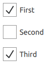
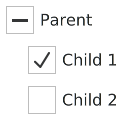
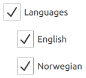

CheckBox QML Type
Check button that can be toggled on or off. More...
| Import Statement: | import QtQuick.Controls 2.5 |
| Since: | Qt 5.7 |
| Inherits: |
Properties
- checkState : enumeration
- nextCheckState : function
- tristate : bool
Detailed Description

CheckBox presents an option button that can be toggled on (checked) or off (unchecked). Check boxes are typically used to select one or more options from a set of options. For larger sets of options, such as those in a list, consider using CheckDelegate instead.
CheckBox inherits its API from AbstractButton. For instance, the state of the checkbox can be set with the checked property.
In addition to the checked and unchecked states, there is a third state: partially checked. The partially checked state can be enabled using the tristate property. This state indicates that the regular checked/unchecked state can not be determined; generally because of other states that affect the checkbox. This state is useful when several child nodes are selected in a treeview, for example.
ColumnLayout {
CheckBox {
checked: true
text: qsTr("First")
}
CheckBox {
text: qsTr("Second")
}
CheckBox {
checked: true
text: qsTr("Third")
}
}
Hierarchical checkbox groups can be managed with a non-exclusive ButtonGroup.

The following example illustrates how the combined check state of children can be bound to the check state of the parent checkbox:
Column { ButtonGroup { id: childGroup exclusive: false checkState: parentBox.checkState } CheckBox { id: parentBox text: qsTr("Parent") checkState: childGroup.checkState } CheckBox { checked: true text: qsTr("Child 1") leftPadding: indicator.width ButtonGroup.group: childGroup } CheckBox { text: qsTr("Child 2") leftPadding: indicator.width ButtonGroup.group: childGroup } }
See also Customizing CheckBox, ButtonGroup, and Button Controls.
Property Documentation
checkState : enumeration |
This property holds a callback function that is called to determine the next check state whenever the checkbox is interactively toggled by the user via touch, mouse, or keyboard.
By default, a normal checkbox cycles between Qt.Unchecked and Qt.Checked states, and a tri-state checkbox cycles between Qt.Unchecked, Qt.PartiallyChecked, and Qt.Checked states.
The nextCheckState callback function can override the default behavior. The following example implements a tri-state checkbox that can present a partially checked state depending on external conditions, but never cycles to the partially checked state when interactively toggled by the user.
CheckBox {
tristate: true
checkState: allChildrenChecked ? Qt.Checked :
anyChildChecked ? Qt.PartiallyChecked : Qt.Unchecked
nextCheckState: function() {
if (checkState === Qt.Checked)
return Qt.Unchecked
else
return Qt.Checked
}
}
This property was introduced in QtQuick.Controls 2.4 (Qt 5.11).
tristate : bool |
This property holds whether the checkbox is a tri-state checkbox.
In the animation below, the first checkbox is tri-state:

The default is false, i.e., the checkbox has only two states.